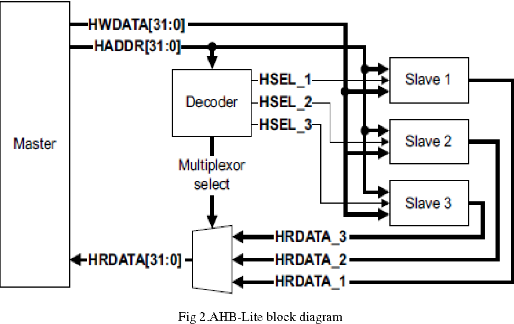

Project Overview
This project involved designing and verifying a complete USB Receiver module for an AHB-Lite System-on-Chip (SoC).
The implementation focused on creating a robust, modular design that ensures accurate USB 1.1 protocol compliance
and seamless integration with the AHB-Lite bus architecture.
Key Achievements
- Modular Architecture: Designed 7 modular components for the USB Receiver in an AHB-Lite SoC
- NRZI Decoding: Implemented Non-Return-to-Zero Inverted (NRZI) decoding for proper data recovery
- Bit De-stuffing: Created bit de-stuffing logic to handle USB protocol requirements
- Error Detection: Integrated comprehensive error detection for sync bytes, PID, address, and CRC
- USB 1.1 Compliance: Ensured accurate USB 1.1 validation throughout the design
- Verification Framework: Created individual and top-level test benches for comprehensive verification
- End-to-End Testing: Verified complete communication between USB Receiver and AHB-Lite bus
Technical Implementation
- Developed a hierarchical design approach with 7 distinct modules
- Implemented USB protocol state machine for proper packet handling
- Created robust error detection and correction mechanisms
- Designed efficient data path from USB interface to AHB-Lite bus
- Built comprehensive test suite covering all USB packet types
Design Components
- NRZI Decoder: Converts NRZI encoded data to standard digital signals
- Bit De-stuffer: Removes stuffed bits according to USB protocol
- Sync Detector: Identifies and validates sync patterns
- PID Parser: Decodes Packet Identifier fields
- Address Handler: Manages USB device addressing
- CRC Checker: Validates Cyclic Redundancy Check codes
- AHB Interface: Bridges USB data to AHB-Lite bus protocol
Technologies Used
Verilog
QuestaSim
USB 1.1 Protocol
AHB-Lite Bus
SystemVerilog
Digital Design
FPGA Verification
Test Bench Design
Verification Strategy
The verification approach included both unit-level and system-level testing. Individual test benches were created
for each of the 7 modules to ensure proper functionality, while comprehensive top-level test benches verified
the complete USB-to-AHB communication path. This dual approach ensured robust validation of the entire system.